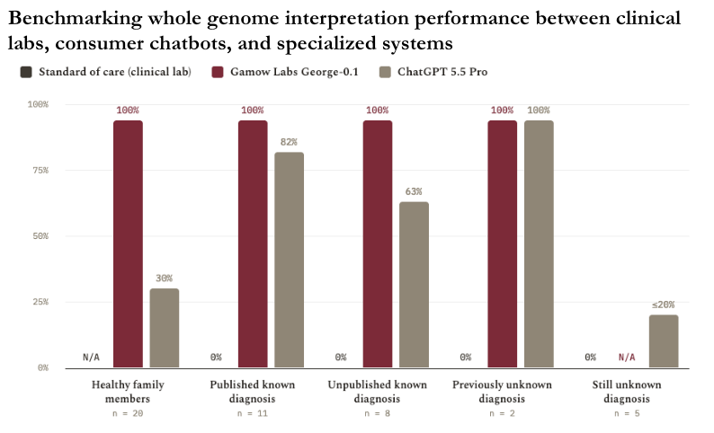

Over the past few years, overwhelming evidence has emerged that expanding access to whole genome sequencing improves clinical and economic outcomes in the NICU, a setting highly enriched for genetic disease. However, sequencing is still largely limited to top academic centers due to the:
- complexity of ordering and interpreting results
- expense and difficulty filling for reimbursement despite near universal payer coverage
- time required to receive results or reanalysis
We at Gamow Labs hypothesize that correctly harnessed AI agents can perform the task of diagnosing a genetic disease at or above human performance at a fraction of the cost and in a fraction of the time at great scale. In this blog post, we present early evidence that this hypothesis is true.
Through a blinded collaboration with Pawel Stankiewicz at Baylor College of Medicine, we accessed the raw reads (FASTQ files) of 46 individuals, who were either infants lost to interstitial lung disease or their healthy family members. In all cases, the initial molecular diagnosis was missed by the first-line clinical genomics lab and escalated to Dr. Stankiewicz, the leading expert on the genetic causes of these diseases, for reanalysis.
We provided the Gamow Labs system, George-0.1, with the raw FASTQ files alongside a simple phenotype provided by Dr. Stankiewicz: “the patient suffered from a lethal lung disorder like alveolar capillary dysplasia, acinar dysplasia, or congenital alveolar dysplasia” (this phenotype was obviously wrong for the healthy family members, but we had no idea that these were included). The agent generated a molecular diagnosis classified using the ACMG guidelines.
We then shared the results to Dr. Stankiewicz for scoring. A true positive would be marked as correct if the variant matched his answer key with pathogenic or likely pathogenic scoring. A true negative would be marked correct if there were either no diagnosis or variant of uncertain significance (VUS) (the system is tuned for recall, so it is not surprising to find some VUSes called for healthy people when presented with a diseased phenotype).
The results were encouraging. Every case, with the exception of the healthy family members, was incorrectly diagnosed by the first-line clinical labs (this is why they were escalated to Dr. Stankiewicz). Dr. Stankiewicz’s lab subsequently solved 19/26, leaving 7 as mysteries. Gamow Labs’ George-0.1, matched the performance of Dr. Stankiewicz’s lab, reproducing the molecular diagnosis of all 19 cases while contributing 2 additional solutions. These initial results, summarized in Table 1, suggest that agentic AI like George-0.1 can exceed the performance of clinical whole genome sequencing labs and match or even exceed specialized human experts.
Furthermore, we independently validated the recent NEJM AI paper authored by Boston Children’s and OpenAI on this dataset. They showed that consumer chatbots–ChatGPT Pro in our study and o3 Deep Research in theirs–have significant utility in rare disease diagnosis. We observed the same. While performance lagged Gamow Labs’s George-0.1, uploading a phenotype and genome into ChatGPT outperforms clinical labs on these challenging cases.
We attempted to extend the experiment to Claude.ai (Opus 4.8) and Gemini.google.com (Gemini 3.5 Flash), two other popular consumer tools, but neither system succeeded in the first three attempts.
| Total | Standard of care (clinical lab) correct | Gamow Labs correct | ChatGPT 5.5 Pro correct* | |
|---|---|---|---|---|
| Healthy family members | 20 | N/A | 20 (100%) | 6 (30%) |
| Published known diagnosis | 11 | 0 (0%) | 11 (100%) | 9 (82%) |
| Unpublished known diagnosis | 8 | 0 (0%) | 8 (100%) | 5 (63%) |
| Previously unknown diagnosis | 2 | 0 (0%) | 2 (100%) | 2 (100%) |
| Still unknown diagnosis | 5 | 0 (0%) | N/A | <=1 (<=20%)** |
Table 1: summary of performance of three approaches to genome interpretation. These are all hard cases involving complex structural or intronic variants that were initially missed by various clinical labs. ChatGPT Pro significantly improved diagnostic yield over clinical workflow and Gamow Labs’ George-0.1 improved further.
* pre-called vcf files passed to chatbot vs. raw reads to Gamow Labs’ George-0.1, making the task easier
** 4/5 unknown cases received molecular diagnoses that were obviously wrong due to the reasons discussed in Case Study #2
Case study #1: Clinical lab false negative
ACD209.3, published in 2022 (only published cases discussed here), was originally sequenced by Rady Children’s Institute for Genomic Medicine. Alignment and variant calling were performed using a standard Illumina DRAGEN pipeline in addition to a combination of open-source CNV/SV callers. Because this ensemble of callers generates a significant number of variants, a CCDS filter was applied to remove variants >1 kilobase from the coding regions of interest. However, this decision resulted in discarding the molecular diagnosis because the impacted FOXF1 enhancer is one megabase upstream of the affected gene.
This type of error is not uncommon. The Deciphering Developmental Disorders (DDD) study directly addressed this question by evaluating ClinVar pathogenic/likely pathogenic variants in exome data from 13,462 probands. Of ClinVar pathogenic variants identified in the cohort, 83.9% (1,134/1,352) were successfully flagged by standard automated filtering pipelines, meaning 16.1% (218/1,352) were filtered out by consequence, inheritance, or other automated filters. After clinical review of these filtered-out variants, 112 variants in 107 probands (0.8% of the cohort) were identified as potential diagnoses that had been missed.
Because there is no need to pre-filter variants for an AI, this problem can entirely be avoided with these types of systems. Both Gamow Labs and ChatGPT Pro solve this case.
Case study #2: ChatGPT Pro false positive
False positives were the largest cohort of ChatGPT failures. While it can be argued that it is unfair to provide an incorrect phenotype, the same incorrect phenotype was provided to both systems and, in a clinical setting, this can be common both due to incorrect initial assessment and evolving conditions. When clinician time is limited, overdiagnosing can be problematic.
This behavior came in many flavors, but the root cause was jumping to conclusions not supported by evidence or considering all information. For example, one of the healthy family members of ACD130.3, published in 2016, was confidently diagnosed with a pathogenic 308 base pair deletion in the FOXF1 regulatory region responsible for many ACD cases. The call is real and in a suspicious region, but this particular deletion is not pathogenic, as evidenced by the 40% population frequency, which ChatGPT Pro did not bother to check.
Each false positive was unique, but the errors largely fell into three buckets:
- Drawing overly creative links between gene and disease
- Ignoring data, e.g. population frequency, that could disqualify a variant as pathogenic
- Hallucinating calls in subtle ways, e.g. incorrectly applying wrong coordinate systems or misunderstanding transcripts
Case study #3: ChatGPT Pro false negative
The distribution of ChatGPT’s errors over the unpublished cases was similar to the false positives, but the two published cases could be chalked up to simple errors.
In ACD144.3, published in 2016, ChatGPT Pro concluded that “there is no high-confidence genetic root cause” and explained why none of the calls could be diagnostic. I was a bit puzzled by this because the solution is a large deletion across the FOXF1 enhancer similar to cases ChatGPT Pro solved correctly.
Once the Gamow Labs’ George-0.1 generated a plausible hypothesis, I returned to the same ChatGPT Pro session and asked if it was correct. ChatGPT Pro responded that it was and its previous error was due to not lifting over the published hg19 coordinates for the hg38 vcf file uploaded.
This is a trivial and unexpected error. Despite the impressive intelligence these models possess, these errors are relatively common when not harnessed optimally. This is a large motivation of the Gamow Labs mission.
If this work interests you, join Gamow Labs!
If you are a cracked AI engineer passionate about biology or an AGI-pilled computational biologist and this work seems interesting, please reach out! We are looking for exceptional people to join the team.